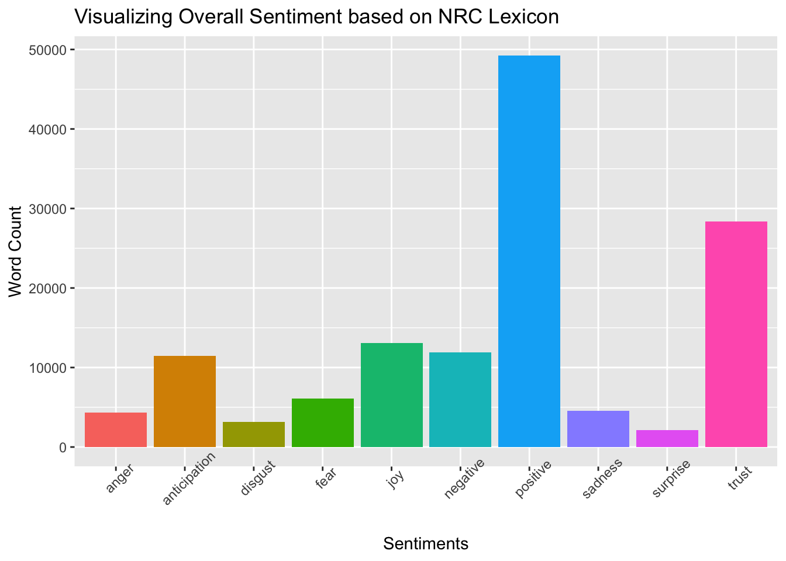

Exploring Artificial Intelligence and Programming: A Comprehensive Analysis of Developer Perspectives
Introduction
In the world of coding, things are shaking up with the rise of artificial intelligence (AI) tools. From people just getting the hang of coding to the pros handling big projects, everyone has a different perspective on AI. In this blog project, we’re digging into the real thoughts of thousands of programmers across the United States at different career stages. Our goal is to use sentiment analysis to better understand the attitudes of programmers towards the use of AI tools in Stack Overflow. With the continuing rise of AI usage in the programming industry, it is important to understand how professional programmers feel about the impact of AI on their work.
All of the programmers in our study are software developers who use Stack Overflow (an online platform for sharing knowledge about computer programming) for their work at least once a week. The data is in the form of survey responses. The survey includes a mix of multiple choice and open response questions in 7 categories: (1) Basic Information; (2) Education, Work, and Career; (3) Technology and Tech Culture; (4) Stack Overflow Usage + Community; (5) Artificial Intelligence; (6) Professional Developer Series (Optional); and (7) Final Questions. In this blog, we have included data from some demographic multiple choice questions (e.g. age, years of coding experience) and have also done text analysis on the open response question “What is your opinion on Stack Overflow using AI tools to improve the current experience? What could AI help with most to improve Stack Overflow?”.
This data is from the American Statistical Association’s Fall 2023 Data Challenge. The description of the dataset and downloadable zip file containing all of the data used in this project can be found at this link: https://community.amstat.org/asafalldatachallenge/home.
Research Findings
Overall Developer Sentiments
Upon analyzing the survey responses from our cohort of active Stack Overflow users, several noteworthy trends and sentiments emerged. Firstly, a majority of participants expressed a generally positive attitude towards the integration of AI tools on Stack Overflow, citing potential benefits in streamlining problem-solving processes and enhancing the overall user experience. Respondents highlighted the prospect of improved search functionality, more accurate question categorization, and tailored content recommendations as areas where AI could significantly contribute.

Examining the density plot, it is evident that a majority of responses lean towards the positive side, indicating an overall optimistic sentiment among the surveyed developers. However, recognizing that opinions extend beyond a simple positive-negative spectrum, we sought a more specific understanding of respondents’ feelings. To look deeper into the emotional landscape, we used a bar chart to visualize the diverse sentiments expressed by developers.

This emotional analysis categorizes responses based on various emotions, such as anticipation, surprise, and trust, offering a more comprehensive perspective beyond positivity or negativity. For instance, the prevalence of trust in the chart implies a widespread optimistic outlook among the participants. Conversely, the substantial frequency of fear, as observed in responses from over 5,000 participants, signals notable concerns or reservations regarding the integration of AI tools on Stack Overflow. This emotional analysis adds more depth to our understanding of the sentiments expressed by programmers, offering a more holistic view of their attitudes toward AI.
Analysis of Text Responses


Sentiments based on various categories
In addition, we used a Shiny app to facilitate further exploration of the data. This application breaks down response scores by key demographic factors, providing a comprehensive look at how opinions regarding AI integration on Stack Overflow vary across different segments of the programming community. Through the Shiny app, users can interactively analyze response scores based on factors such as experience, age, and education.
Analyzing the findings from the Shiny app, which breaks down response scores by demographic factors, several noteworthy patterns emerged. Examining sentiments based on experience levels, it became apparent that less experienced programmers tended to express more positive opinions about AI. This suggests a potential correlation between lower levels of coding experience and a more favorable outlook towards the integration of AI tools on Stack Overflow. In terms of age groups, the median opinion scores were consistent across most groups, except for respondents aged 65 and above, who exhibited a slightly lower median sentiment. Notably, the age groups of 18-24 and 25-34 displayed the highest upper range in opinions, though this could be influenced by a higher number of respondents within these age brackets. Conversely, the 35-44 and 45-54 age groups showed lower sentiment ranges. When examining sentiments by education, no substantial differences were observed, with most outliers occurring among respondents holding a Bachelor’s degree. These nuanced insights gleaned from the Shiny app shed light on the intersectionality of demographic factors and their impact on programmers’ sentiments regarding AI integration on Stack Overflow.
Conclusion
Our conclusion and recommendations maybe?
Limitations and Improvements
While our study has provided valuable insights into programmers’ attitudes towards AI on Stack Overflow, it is important to acknowledge certain limitations that could impact the accuracy of our findings. Sentiment analysis, while a powerful tool, is not without its flaws. The complex nature of human language, sarcasm, or context-specific interpretations can challenge the accuracy of sentiment categorization. Additionally, the filtration of words and the strength assigned to them can influence the analysis outcome, potentially introducing bias. Furthermore, the uneven distribution of ages and experience levels in our dataset might skew our results towards certain demographic groups.
To address these limitations, future research endeavors could focus on analyzing a larger set of open-response answers, providing a more precise understanding of programmer sentiments. Experimenting with various lexicons and refining the sentiment analysis methodology could also enhance the accuracy of our findings. Moreover, diversifying the survey audience beyond Stack Overflow users to include programmers from specific companies or industries could offer a more comprehensive and representative view of attitudes towards AI tools in coding. We may obtain a more comprehensive and precise representation of the perspectives of the programming community by implementing these enhancements.
References
Baumer, B. S., Kaplan, D. T., and Horton, N. J. (2021), Modern Data Science with R (2nd ed.), Boca Raton, FL: CRC Press.
Silge J, Robinson D (2016). “tidytext: Text Mining and Analysis Using Tidy Data Principles in R.” JOSS, 1(3). doi:10.21105/joss.00037 https://doi.org/10.21105/joss.00037, http://dx.doi.org/10.21105/joss.00037.
Hvitfeldt E (2022). textdata: Download and Load Various Text Datasets. R package version 0.4.4, https://CRAN.R-project.org/package=textdata.
Shah, Syed A. A. (October 2022), “Starbucks Drinks” (Version 1), Kaggle, available at https://www.kaggle.com/datasets/syedasimalishah/starbucks-drinks.
Wickham H, Averick M, Bryan J, Chang W, McGowan LD, François R, Grolemund G, Hayes A, Henry L, Hester J, Kuhn M, Pedersen TL, Miller E, Bache SM, Müller K, Ooms J, Robinson D, Seidel DP, Spinu V, Takahashi K, Vaughan D, Wilke C, Woo K, Yutani H (2019). “Welcome to the tidyverse.” Journal of Open Source Software, 4(43), 1686. doi:10.21105/joss.01686 https://doi.org/10.21105/joss.01686.
Wickham H, Hester J, Bryan J (2023). readr: Read Rectangular Text Data. R package version 2.1.4, https://CRAN.R-project.org/package=readr.